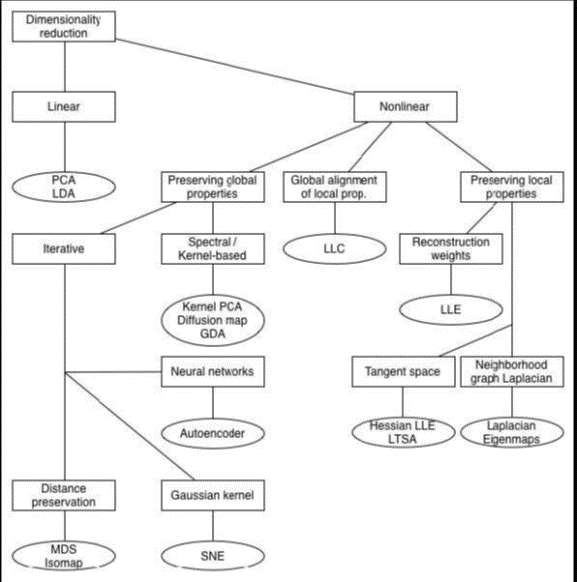
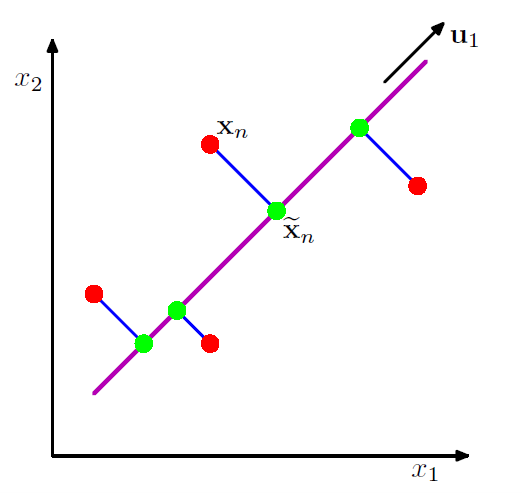
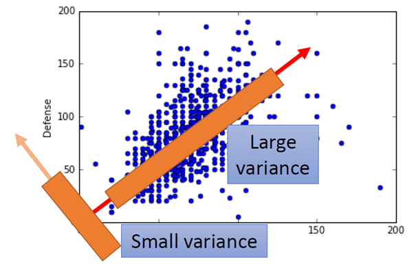
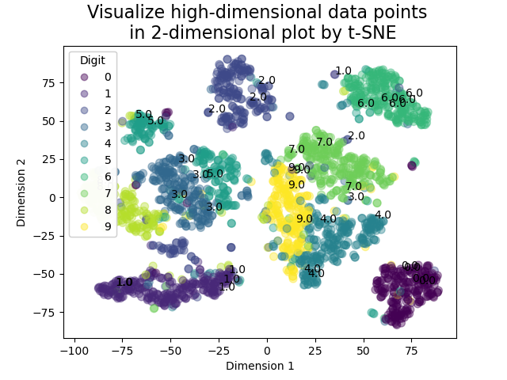
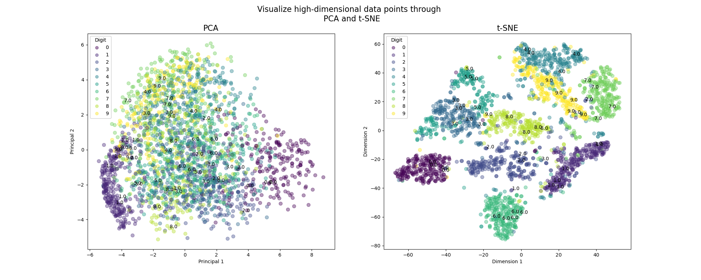

Dimension Reduction and High Dimensional Data Visualization by PCA and t-SNE
Principal Component Analysis (PCA) and t-Distributed Stochastic Neighbor Embedding (t-SNE) are all efficient ways to transform the data points in high dimesion to the corresponding feature points in low dimension without losing the principal feature. Futhermore, the low-dimensional data can be visualized in frame, can feel by human. Hence, In this post, I simply summarized some mathematics model for PCA and t-SNE algorithms, implemented these methods repectively, and presented some advangtages and disadvantages of these alogorithms. At the end, some important hyperparameters that effect the performance of t-SNE are described to remind readers to choose the proper parameters. Some other demension reduction methods were summarized as follows:
- PCA (linear);
- t-SNE (non-parametric/ nonlinear);
- Sammon mapping (nonlinear);
- Isomap (nonlinear);
- LLE (nonlinear);
- CCA (nonlinear);
- SNE (nonlinear);
- MVU (nonlinear);
- Laplacian Eigenmaps (nonlinear),
and their attributes were shown in the below figure. 
1. PCA
Principal Component Analysis (PCA) is a process of computing principal components using the first few principal component and ignoring the rest. The goals of PCA are to
- extract the most important information from the data table;
- compress the size of the data set by keeping only this important information;
- simplify the description of the data set; and
- analyze the structure of the observations and the variables.
The PCA can be defined commonly by two methods, resulting in the same algorithme. As shown in the following figure, principal component analysis seeks a space of lower dimensionality, known as the principal subspace and denoted by the magenta line, such that the orthogonal projection of the data points (red dots) onto this subspace maximizes the variance of the projected points (green dots). An alternative definition of PCA is based on minimizing the sum-of-squares of the projection errors, indicated by the blue lines. 
1.1 Maxiunum variance formulation
Consider a data set of observations $\left\{\mathbf{x}_{n}\right\}$ where $n = 1, \cdots, N$ and the dimensionality of $\mathbf{x}_{n}$ is $D$. The PCA can project the data on to lower dimensional space with dimensionality $M < D$ while maximizing the variance of the projected data. We define unit vector ${{w}_{1}}$, which is column vector, as the first principal direction and each data point $\mathbf{x}_{n}$ is then projected onto a scalar value ${{z}_{1}^n} = \mathbf{{w}_{1}^{T}}{{{x}}_{n}}$. Based on the above definition, we preject all data points onto $\mathbf{w_1}$ direction, maximizing the variance along $\mathbf{w_1}$ direction, $$\max Var\left( {{\mathbf{z}}_{1}} \right)=\frac{1}{N}\sum\limits_{1}^{N}{{{\left( {{\mathbf{z}}_{1}}-{{{\mathbf{\bar{z}}}}_{1}} \right)}^{2}}},{{\left|| {{\mathbf{w}}_{1}} \right||}_{2}}=1, $$  where $\mathbf{z}_{1}$ is $[z_1^{1}, z_2^{1}, \cdots, z_N^{1}]$, and ${{{\mathbf{\bar{z}}}}_{1}}$ is sample set mean, given by ${{\mathbf{\bar{z}}}_{1}}=\frac{1}{N}\sum\limits_{i=1}^{N}{z_{i}^{1}}$. The above formulation is also used in other principal direction like $\mathbf{w_2}$, so the variance of data set $\mathbf{z_2}$ can be derived by $$\max Var\left( {{\mathbf{z}}_{2}} \right)=\frac{1}{N}\sum\limits_{1}^{N}{{{\left( {{\mathbf{z}}_{2}}-{{{\mathbf{\bar{z}}}}_{2}} \right)}^{2}}},{{\left|| {{\mathbf{w}}_{2}} \right||}_{2}}=1$$ As a result, the low-dimensional data points $$\mathbf{z}=W\mathbf{x}, $$
where $W$ is $\left[ \begin{matrix} {{\mathbf{w}}_{1}} & {{\mathbf{w}}_{2}} & {{\mathbf{w}}_{3}} & \cdots \end{matrix} \right]$, and it is a orthogonal matrix. The variance of data set $\mathbf{z_1}$ can be derived
\begin{align} Var\left( {{{\mathbf{{z}}}}_{1}} \right) & =\frac{1}{N}{{\sum\limits_{i=1}^{N}{\left( z_{i}^{1}-{{{\bar{z}}}^{1}} \right)}}^{2}} \nonumber \\ & =\frac{1}{N}{{\sum\limits_{i=1}^{N}{\left( \mathbf{w}_{1}^{\text{T}}x_{i}^{1}-\mathbf{w}{1}^{\text{T}}{{{\bar{x}}}^{1}} \right)}}^{2}} \nonumber\\ & =\frac{1}{N}{{\sum\limits{i=1}^{N}{\left[ \mathbf{w}_{1}^{\text{T}}\left( x_{i}^{1}-{{{\bar{x}}}^{1}} \right) \right]}}^{2}}=\frac{1}{N}\sum\limits_{i=1}^{N}{\mathbf{w}_{1}^{\text{T}}\left( x_{i}^{1}-{{{\bar{x}}}^{1}} \right)\mathbf{w}_{1}^{\text{T}}\left( x_{i}^{1}-{{{\bar{x}}}^{1}} \right)} \nonumber\\ & =\frac{1}{N}\sum\limits_{i=1}^{N}{\mathbf{w}_{1}^{\text{T}}\left( x_{i}^{1}-{{{\bar{x}}}^{1}} \right)}{{\left[ \mathbf{w}_{1}^{\text{T}}\left( x_{i}^{1}-{{{\bar{x}}}^{1}} \right) \right]}^{\text{T}}} \nonumber\\ & =\mathbf{w}_{1}^{\text{T}}\left[ \frac{1}{N}\sum\limits_{i=1}^{N}{\left( x_{i}^{1}-{{{\bar{x}}}^{1}} \right)}{{\left( x_{i}^{1}-{{{\bar{x}}}^{1}} \right)}^{\text{T}}} \right]{{\mathbf{w}}{1}} \nonumber\\ & = \mathbf{w}_{1}^{\text{T}} cov\left( \mathbf x\right) \mathbf{w}{1}\nonumber\\ \end{align}
where $S = cov\left( \mathbf x\right)$ is covariance matrix of data set $\left\{\mathbf{x}_{n}\right\}$, and it is a sysmetric and semidefinite matrix. Eventually, if we want to obtain the principal vector $\mathbf{w_1}$, the optimization equation is
\begin{align} \underset{{{\mathbf{w}}_{1}}}{\mathop{\max }},\mathbf{w}_{1}^{\text{T}}S{{\mathbf{w}}_{1}},\\ s.t.\quad \mathbf{w}_{1}^{\text{T}}{{\mathbf{w}}_{1}} = 1. \end{align}
Using the Langrange multiplier, $$g\left( {{\mathbf{w}}_{1}} \right)=\mathbf{w}_{1}^{\text{T}}S{{\mathbf{w}}_{1}}+\alpha \left( 1-\mathbf{w}_{1}^{\text{T}}{{\mathbf{w}}_{1}} \right), $$
let $\frac{\partial g\left( {{\mathbf{w}}_{1}} \right)}{\partial {{\mathbf{w}}_{1}}}=0$, the following equation can be obtianed $$\frac{\partial g\left( {{\mathbf{w}}_{1}} \right)}{\partial {{\mathbf{w}}_{1}}}=S{{\mathbf{w}}_{1}}-\alpha{{\mathbf{w}}_{1}} =0$$ Hence, the ${{\mathbf{w}}_{1}}$ and $\alpha$ are the eigenvector and the corresponding eigenvalue of covariance matrix $S$. Moreover, $\alpha$ is the first largest eigenvalue. Also, the ${{\mathbf{w}}_{2}}$ is the corresponding eigenvetor related to the second largest eigenvalue of $S$.
2. t-SNE
t-SNE is a mechine learning algorithm for visualazation developed by Sam Roweis and Geoggrey Hinton, well suitied for embedding high-dimensiontal data for visualization in a low-dimensional space of two or three dimension observed directly by human. It is extensively applied in image processing, NLP, genomic data and speech processing. The t-SNE puts emphasis on (1) modeling dissimilar datapoints by means of large pairwise distances, and (2) modeling similar datapoints by means of small pairwise distances. To keep things simple, here’s a brief overview of working of t-SNE:
- The algorithms starts by calculating the probability of similarity of points in high-dimensional space and calculating the probability of similarity of points in the corresponding low-dimensional space. The similarity of points is calculated as the conditional probability that a point A would choose point B as its neighbor if neighbors were picked in proportion to their probability density under a Gaussian (normal distribution) centered at A.
- It then tries to minimize the difference between these conditional probabilities (or similarities) in higher-dimensional and lower-dimensional space for a perfect representation of data points in lower-dimensional space.
- To measure the minimization of the sum of difference of conditional probability t-SNE minimizes the sum of Kullback-Leibler divergence of overall data points using a gradient descent method.
2.1 Mathematics model
Step 1: Define similarity in high-dimensional space
t-SNE uses Stochastic Neighbour Embedding (SNE) method to convert the high-dimensional Euclidean distances between data points into conditional probablities that represent their similiarities. The conditional probability ${{p}_{j|i}}$ is defined to represent the similarity, $x_i$ would choose $x_j$ as its neighhour if neighours are chosen in proportion to their probablity density under a Guassian with center at $x_i$. The nearer the data points are, the higher value of ${{p}_{j|i}}$ is. Mathematically, ${{p}_{j|i}}$ can be defined by $${\displaystyle p_{j\mid i}={\frac {\exp(-\lVert \mathbf {x} {i}-\mathbf {x} {j}\rVert ^{2}/2\sigma {i}^{2})}{\sum {k\neq i}\exp(-\lVert \mathbf {x} {i}-\mathbf {x} {k}\rVert ^{2}/2\sigma {i}^{2})}}}, $$ where $\sigma_i$ is the variance of the Guassian distribution with the mean being $x_i$. Morever $p{ij} $is defined by $${\displaystyle p{ij}={\frac {p{j\mid i}+p{i\mid j}}{2N}}}$$ where $p{ii} = 0$ and $p{ij} = p{ji}$.
Step 2: Define similarity in low-dimensional space
For the low-dimensional counterparts $y_i$ and $y_j$ of the high-dimensional data points $x_i$ and $x_j$. It is possible to define a similar conditional probability, donoted by $q_{ij}$ $${\displaystyle q_{ij}={\frac {(1+\lVert \mathbf {y} _{i}-\mathbf {y} _{j}\rVert ^{2})^{-1}}{\sum _{k}\sum _{l\neq k}(1+\lVert \mathbf {y} _{k}-\mathbf {y} {l}\rVert ^{2})^{-1}}}}, $$ where $q{ii} = 0$.
Step 3: Define cost function to compute $q_{ij}$
If the map points $y_i$ and $y_j$ correctly model the similarity between the high-dimensional datapoints $x_i$ and $x_j$, the conditional probabilities $p_{j|i}$ and $q_{j|i}$ will be equal. Motivated by this observation, SNE aims to find a low-dimensional data representation that minimizes the mismatch between $p_{j|i}$ and $q_{j|i}$. A natural measure of the faithfulness with which $q_{j|i}$ models $p_{j|i}$ is the Kullback-Leibler divergence (which is in this case equal to the cross-entropy up to an additive constant). SNE minimizes the sum of Kullback-Leibler divergences over all datapoints using a gradient descent method. The cost function C is given by $$C= \sum_{}{\displaystyle \mathrm {KL} \left(P\parallel Q\right)=\sum {i\neq j}p{ij}\log {\frac {p_{ij}}{q_{ij}}}}$$ in which $P$ represents the conditional probability distribution over all other datapoints given datapoint $x$, and $Q$ represents the conditional probability distribution over all other map points given map point $y$. The defination of $p_{ij}$ and $q_{ij}$ solves the crowding problem for SNE from Laurens van der Maaten in Visualizing Data using t-SNE. The gradient of the Kullback-Leibler divergence $C$ is derived (the detailed derived procedure was presented in Visualizing Data using t-SNE) $$\frac{\delta C}{\delta {{y}{i}}}=4\sum\limits{j}{\left( {{p}{ij}}-{{q}{ij}} \right)}\left( {{y}{i}}-{{y}{j}} \right){{\left( 1+{{\left| {{y}{i}}-{{y}{j}} \right|}^{2}} \right)}^{-1}}$$
2.2 Implementing PCA in python3
## Inherited from personal page of Laurens van der Maaten
## https://lvdmaaten.github.io/tsne/
import numpy as np
import matplotlib.pyplot as plt
def Hbeta(D=np.array([]), beta=1.0):
"""
Compute the perplexity and the P-row for a specific value of the
precision of a Gaussian distribution.
"""
# Compute P-row and corresponding perplexity
P = np.exp(-D.copy() * beta)
sumP = sum(P)
H = np.log(sumP) + beta * np.sum(D * P) / sumP
P = P / sumP
return H, P
def x2p(X=np.array([]), tol=1e-5, perplexity=30.0):
"""
Performs a binary search to get P-values in such a way that each
conditional Gaussian has the same perplexity.
"""
# Initialize some variables
print("Computing pairwise distances...")
(n, d) = X.shape
sum_X = np.sum(np.square(X), 1)
D = np.add(np.add(-2 * np.dot(X, X.T), sum_X).T, sum_X)
P = np.zeros((n, n))
beta = np.ones((n, 1))
logU = np.log(perplexity)
# Loop over all datapoints
for i in range(n):
# Print progress
if i % 500 == 0:
print("Computing P-values for point %d of %d..." % (i, n))
# Compute the Gaussian kernel and entropy for the current precision
betamin = -np.inf
betamax = np.inf
Di = D[i, np.concatenate((np.r_[0:i], np.r_[i+1:n]))]
(H, thisP) = Hbeta(Di, beta[i])
# Evaluate whether the perplexity is within tolerance
Hdiff = H - logU
tries = 0
while np.abs(Hdiff) > tol and tries < 50:
# If not, increase or decrease precision
if Hdiff > 0:
betamin = beta[i].copy()
if betamax == np.inf or betamax == -np.inf:
beta[i] = beta[i] * 2.
else:
beta[i] = (beta[i] + betamax) / 2.
else:
betamax = beta[i].copy()
if betamin == np.inf or betamin == -np.inf:
beta[i] = beta[i] / 2.
else:
beta[i] = (beta[i] + betamin) / 2.
# Recompute the values
(H, thisP) = Hbeta(Di, beta[i])
Hdiff = H - logU
tries += 1
# Set the final row of P
P[i, np.concatenate((np.r_[0:i], np.r_[i+1:n]))] = thisP
# Return final P-matrix
print("Mean value of sigma: %f" % np.mean(np.sqrt(1 / beta)))
return P
def pca(X=np.array([]), no_dims=50):
"""
Runs PCA on the NxD array X in order to reduce its dimensionality to
no_dims dimensions.
"""
print("Preprocessing the data using PCA...")
(n, d) = X.shape
X = X - np.tile(np.mean(X, 0), (n, 1))
(l, M) = np.linalg.eig(np.dot(X.T, X))
Y = np.dot(X, M[:, 0:no_dims])
return Y
def tsne(X=np.array([]), no_dims=2, initial_dims=50, perplexity=30.0):
"""
Runs t-SNE on the dataset in the NxD array X to reduce its
dimensionality to no_dims dimensions. The syntaxis of the function is
`Y = tsne.tsne(X, no_dims, perplexity), where X is an NxD NumPy array.
Notation of the input parameters:
no_dims: Show the dimensional datapoints in 2-dimension space.
initial_dims: The PCA is introduced to pre-reduce the initial dimension. After the process, Dimension become 50 from 784.
perplexity: It is, in a sense, a guess about the number of close neighbors each point has. Its recommended value (5-50).
"""
# Check inputs
if isinstance(no_dims, float):
print("Error: array X should have type float.")
return -1
if round(no_dims) != no_dims:
print("Error: number of dimensions should be an integer.")
return -1
# Initialize variables
X = pca(X, initial_dims).real
(n, d) = X.shape
max_iter = 1000
initial_momentum = 0.5
final_momentum = 0.8
eta = 500
min_gain = 0.01
Y = np.random.randn(n, no_dims)
dY = np.zeros((n, no_dims))
iY = np.zeros((n, no_dims))
gains = np.ones((n, no_dims))
# Compute P-values
P = x2p(X, 1e-5, perplexity)
P = P + np.transpose(P)
P = P / np.sum(P)
P = P * 4. # early exaggeration
P = np.maximum(P, 1e-12)
# Run iterations
for iter in range(max_iter):
# Compute pairwise affinities
sum_Y = np.sum(np.square(Y), 1)
num = -2. * np.dot(Y, Y.T)
num = 1. / (1. + np.add(np.add(num, sum_Y).T, sum_Y))
num[range(n), range(n)] = 0.
Q = num / np.sum(num)
Q = np.maximum(Q, 1e-12)
# Compute gradient
PQ = P - Q
for i in range(n):
dY[i, :] = np.sum(np.tile(PQ[:, i] * num[:, i], (no_dims, 1)).T * (Y[i, :] - Y), 0)
# Perform the update
if iter < 20:
momentum = initial_momentum
else:
momentum = final_momentum
gains = (gains + 0.2) * ((dY > 0.) != (iY > 0.)) + \
(gains * 0.8) * ((dY > 0.) == (iY > 0.))
gains[gains < min_gain] = min_gain
iY = momentum * iY - eta * (gains * dY)
Y = Y + iY
Y = Y - np.tile(np.mean(Y, 0), (n, 1))
# Compute current value of cost function
if (iter + 1) % 10 == 0:
C = np.sum(P * np.log(P / Q))
print("Iteration %d: error is %f" % (iter + 1, C))
# Stop lying about P-values
if iter == 100:
P = P / 4.
# Return solution
return Y
if __name__ == "__main__":
print("Run Y = tsne.tsne(X, no_dims, perplexity) to perform t-SNE on your dataset.")
print("Running example on 2,500 MNIST digits...")
X = np.loadtxt("mnist2500_X.txt")
labels = np.loadtxt("mnist2500_labels.txt")
Y = tsne(X, 2, 50, 20.0)
np.savetxt("myfile.txt", Y)
# data_to_show = np.loadtxt("myfile.txt")
data_to_show = Y
fig, ax = plt.subplots()
scatter = plt.scatter(data_to_show[:, 0], data_to_show[:, 1], 50, labels, alpha=0.4)
for i, txt in enumerate(labels[0:40]):
ax.annotate(txt, (data_to_show[i, 0], data_to_show[i, 1]))
legend1 = ax.legend(*scatter.legend_elements(),
loc="upper left", title="Digit")
ax.add_artist(legend1)
ax.set_title('Visualize high-dimensional data points \n in 2-dimensional plot by t-SNE', fontsize=16)
ax.set_xlabel('Dimension 1')
ax.set_ylabel('Dimension 2')
plt.savefig('t-SNE.png')
plt.show()
As can be seen in the following figure, the visualized high-dimensional mnist dataset is shown in the lower 2-dimensional space. 
2.3 How to give the hyper parameters
- n_components: Dimension of the embedded space, this is the lower dimension that we want the high dimension data to be converted to. The default value is 2 for 2-dimensional space.
- Perplexity: The perplexity is related to the number of nearest neighbors that are used in t-SNE algorithms. Larger datasets usually require a larger perplexity. Perplexity can have a value between 5 and 50. The default value is 30.
- n_iter: Maximum number of iterations for optimization. Should be at least 250 and the default value is 1000
- learning_rate: The learning rate for t-SNE is usually in the range [10.0, 1000.0] with the default value of 200.0.
3. Comparation between PCA and t-SNE
- The PCA is a linear algorithm which is not able to interpret complex ploynomial relationship between features. By contrast, t-SNE is actived based on probability distributions on neighbourhood graph to understand the structure with the data;
- The linear dimension reduction algorithm (PCA) concentrates on placing dissimilar data points far apart in a lower dismension representation, while the nonlinear algorithm (t-SNE) places the similar datapoints closely together in lower dimesional space. Hence, as can be seen in the following figure, PCA can only capture linear structures in the features. The t-SNE algorithm works in a very different way and focuses to preserve the local distances of the high-dimensional data in some mapping to low-dimensional data.

import numpy as np
import matplotlib.pyplot as plt
from sklearn.decomposition import PCA
from sklearn.manifold import TSNE
X = np.loadtxt("mnist2500_X.txt")
labels = np.loadtxt("mnist2500_labels.txt")
## implementing by PCA
pca = PCA(n_components=2, svd_solver='full')
data_to_show_PCA = pca.fit_transform(X)
## implementing by t-SNE
data_to_show_tSNE = TSNE(n_components=2).fit_transform(X)
## Figure PCA
fig, ax = plt.subplots(1,2,figsize=(20, 8))
scatter1 = ax[0].scatter(data_to_show_PCA[:, 0], data_to_show_PCA[:, 1], 50, labels, alpha=0.4)
for i, txt in enumerate(labels[0:50]):
ax[0].annotate(txt, (data_to_show_PCA[i, 0], data_to_show_PCA[i, 1]))
ax[0].set_title('PCA', fontsize=16)
ax[0].set_xlabel('Principal 1')
ax[0].set_ylabel('Principal 2')
legend1 = ax[0].legend(*scatter1.legend_elements(),
loc="upper left", title="Digit")
ax[0].add_artist(legend1)
fig.suptitle('Visualize high-dimensional data points through \n PCA and t-SNE', fontsize=16)
## Figure t-SNE
scatter2 = ax[1].scatter(data_to_show_tSNE[:, 0], data_to_show_tSNE[:, 1], 50, labels, alpha=0.4)
for i, txt in enumerate(labels[0:50]):
ax[1].annotate(txt, (data_to_show_tSNE[i, 0], data_to_show_tSNE[i, 1]))
ax[1].set_title('t-SNE', fontsize=16)
ax[1].set_xlabel('Dimension 1')
ax[1].set_ylabel('Dimension 2')
legend2 = ax[1].legend(*scatter2.legend_elements(),
loc="upper left", title="Digit")
ax[1].add_artist(legend2)
plt.savefig('PCA_t-SNE.png')
plt.show()

References
- A tutorial on Principal Components Analysis
- Principal component analysis
- PCA: A Practical Guide to Principal Component Analysis in R & Python
- A simple introduction to PCA.
- Chaper12: Continous latent variables in Pattern recognition and machine learning.
- t-SNE Walkthrough
- Good hyperparameter Information
- Laurens van der Maaten personal page
- Laurens van der Maaten’ talk about t-SNE
- What advantages does the t-SNE algorithm have over PCA?
Yinyin SU
PhD student in Robotic and Control
My research interests include soft robotics, control and optimization, robotic system and dynamic.
{kind=link}